1多选难度 ⭐⭐约 6 分钟
大量程电表由灵敏电流表 G 与变阻箱 $R$ 改装，如图。G 满偏 $I_g$、内阻 $R_g$、$R_0$ 为接入阻值。正确的是（ ）
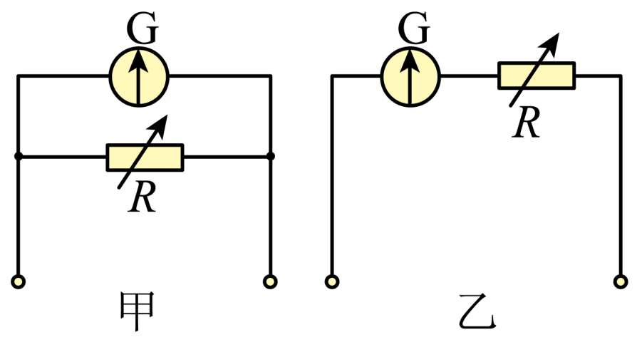
A. 甲是电流表，增 $R_0$ 量程增大B. 甲是电流表，量程 $\dfrac{I_g(R_g+R_0)}{R_0}$
C. 乙是电压表，量程 $I_gR_0$D. 乙是电压表，增 $R_0$ 量程增大
💡 显示答案与解析
【答案】BD 【难度】0.85
甲并联分流 → 电流表，量程 $I=I_g+\dfrac{I_gR_g}{R_0}=\dfrac{I_g(R_g+R_0)}{R_0}$；$R_0$ 越大分流越小，量程越小，A 错 B 对。
乙串联分压 → 电压表，量程 $U=I_gR_g+I_gR_0=I_g(R_g+R_0)$；$R_0$ 越大量程越大，C 错 D 对。
2单选难度 ⭐⭐约 6 分钟
用表头 G 与三定值电阻设计多量程电流表（1、2 两量程）。只增大 $R_1$ 时，正确的是（ ）
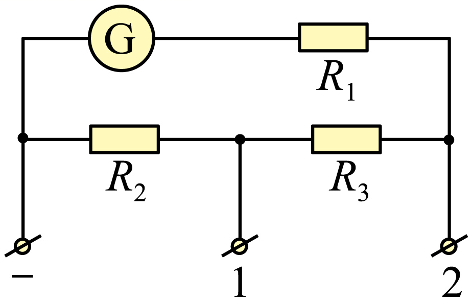
A. 两量程均变大B. 两量程均变小C. 1 变大、2 变小D. 1 变小、2 变大
💡 显示答案与解析
【答案】A 【难度】0.85
$I_1=\dfrac{I_g(R_g+R_1+R_3)}{R_2}+I_g$，$I_2=\dfrac{I_g(R_g+R_1)}{R_2+R_3}+I_g$。只增 $R_1$ 时两式分子均增大，两量程均变大。
3单选难度 ⭐⭐⭐约 8 分钟
两量程电流表内阻 $R_g=180\ \Omega$，M、P 量程 $0\sim20I_g$，M、Q 量程 $0\sim10I_g$，$R_1,R_2$ 定值。正确的是（ ）
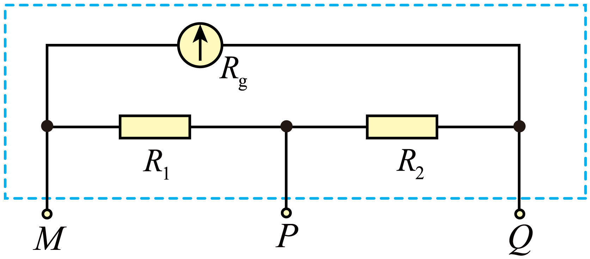
A. $R_1=9\ \Omega$B. M、Q 总电阻 $9\ \Omega$C. $R_2=20\ \Omega$D. M、P 总电阻 $9.5\ \Omega$
💡 显示答案与解析
【答案】D 【难度】0.62
M、Q：$I_gR_g=9I_g(R_1+R_2)\Rightarrow R_1+R_2=20\ \Omega$。M、P：$I_g(R_g+R_2)=19I_gR_1\Rightarrow 180+R_2=19R_1$。联立 $R_1=10\ \Omega$、$R_2=10\ \Omega$。
$R_{MQ}=\dfrac{I_gR_g}{10I_g}=18\ \Omega$；$R_{MP}=\dfrac{I_g(R_g+R_2)}{20I_g}=9.5\ \Omega$。故选 D。
4多选难度 ⭐⭐⭐约 6 分钟
电压表、电流表都由小量程电流表改装，如图甲、乙。正确的是（ ）
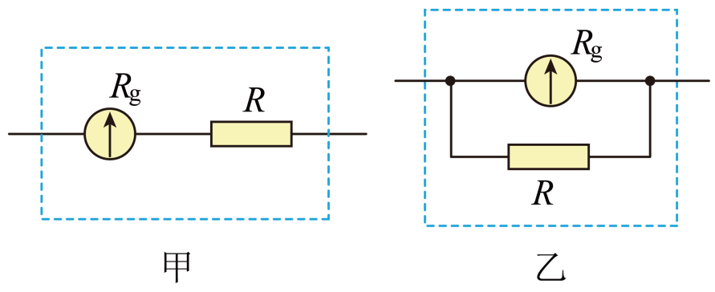
A. 并联 $R$，量程是原来的 $\dfrac{R_g+R}{R}$ 倍B. 电压表示数偏小，给串联电阻并较大电阻
C. 电流表示数偏小，给并联电阻串较大电阻D. 逐格校准需限流式电路
💡 显示答案与解析
【答案】AB 【难度】0.65
A：$I=\dfrac{I_gR_g}{R}+I_g\Rightarrow \dfrac{I}{I_g}=\dfrac{R_g+R}{R}$，对。
B：电压表示数偏小→表头电流小→应减小串联电阻（并大电阻），对。
C：电流表示数偏小→表头电流小→应增大分流电阻（串较小电阻），错。
D：逐格校准电压从零起，需分压式电路，错。
5填空难度 ⭐⭐⭐约 11 分钟
将毫安表 G₁ 改装为电压表（内阻、满偏电流未知），借 G₂（3 mA）、R₁(0~5000 Ω)、R₂(0~9999 Ω)、E(3 V)、标准电压表 V 实验。(1) 测 G₁：② 断开 S₂ 闭 S₁ 调 R₁ 使 G₁ 满偏，G₂ 示数 ______ mA（图乙）；③ 闭 S₂ 使 G₂ 同示数且 G₁ 偏 1/4，R₂=100 Ω，则 G₁ 满偏 ______ mA、内阻 ______ Ω；(2) 改装 3 V 电压表：① R₂ 调为 ______ Ω；② 校对时改装表总比标准表略小，原因可能是 G₁ 内阻测量值 ______（大于/小于）真实值。
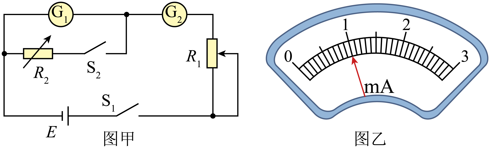
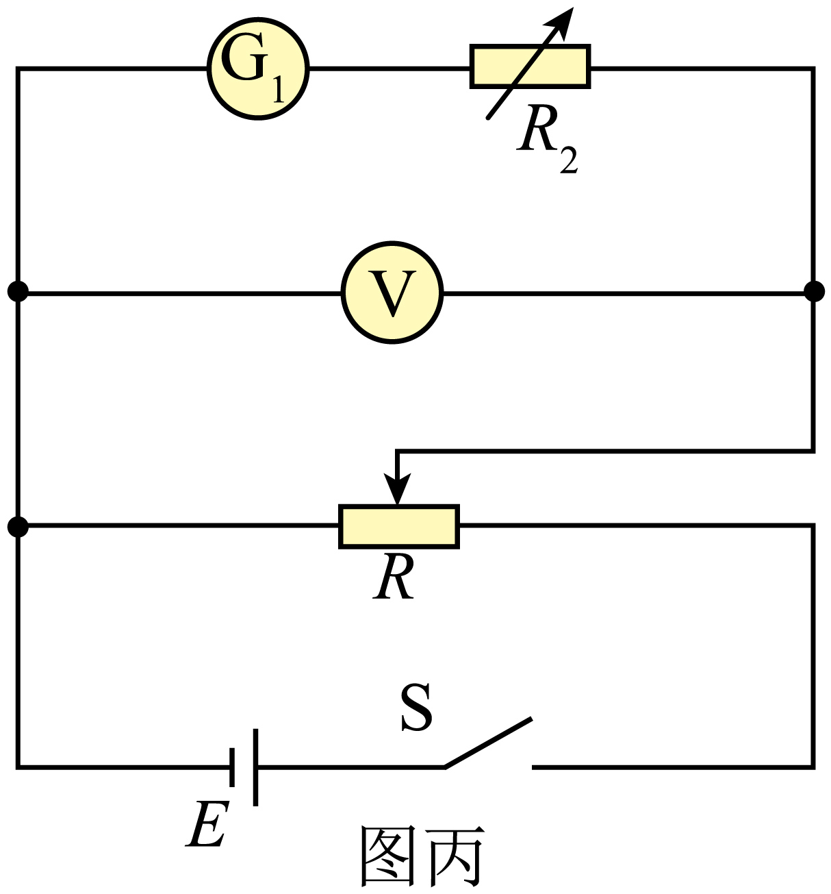
💡 显示答案与解析
【答案】(1) $1.00$；$1.00$；$300$ (2) $2700$；小于 【难度】0.64
(1) G₂ 量程 3 mA、分度 0.1 mA，读 $1.00\ \text{mA}$；$\frac14 I_gR_g=\frac34 I_gR_2\Rightarrow R_g=300\ \Omega$，$I_g=1.00\ \text{mA}$。
(2) 串联 $R=\dfrac{U}{I_g}-R_g=2700\ \Omega$；示数偏小说明量程偏大→$R_g$ 测量值偏小。
6填空难度 ⭐⭐⭐约 11 分钟
量程 $500\ \mu\text{A}$、内阻未知的微安表改装成 $3\ \text{V}$ 电压表，先半偏法测内阻（R₁ 0~20 Ω、R₂ 0~20 kΩ，E=1.5 V）。(1) 滑动变阻器选 ______（R₁/R₂）；(2) 半偏时 R 读数为 ______ Ω；(3) 改装后按图乙连线补充完整（见答图）；(4) 标准表 $2.4\ \text{V}$ 时微安表 $405\ \mu\text{A}$，则 $R_0$ 应调至 ______ Ω（4 位有效数字）。
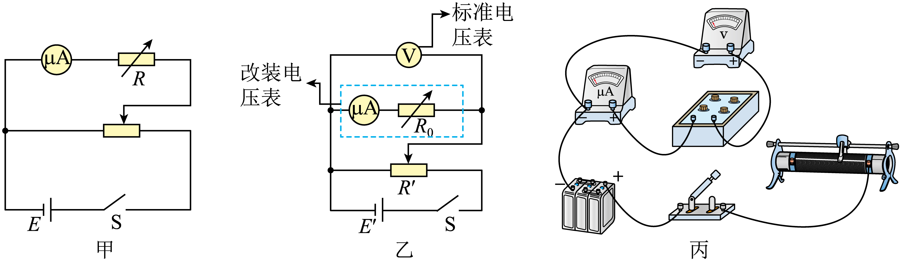
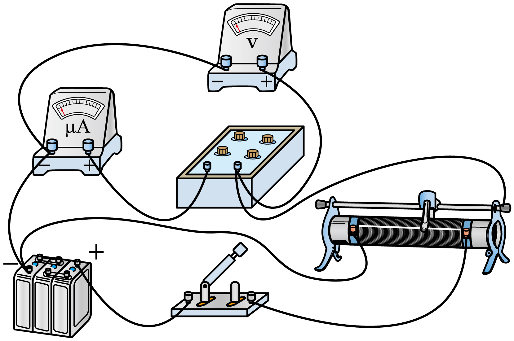
💡 显示答案与解析
【答案】(1) R₁ (2) $1500$ (3) 见答图 (4) $4574$ 【难度】0.65
(1) 分压式选小阻值 R₁。
(2) 半偏法：$R_g=$ 电阻箱读数 $=1500\ \Omega$。
(4) 准确时 $R_0=\dfrac{U-I_gR_g}{I_g}=\dfrac{3-0.75}{5\times10^{-4}}=4500\ \Omega$；标准 $2.4\ \text{V}$、微安表 $405\ \mu\text{A}$ 时 $R_{01}+R_g=\dfrac{2.4}{405\times10^{-6}}=5925.9\ \Omega$，准确应 $6000\ \Omega$，故调为 $4574\ \Omega$。
7填空难度 ⭐⭐⭐约 11 分钟
将量程 $0\sim3\ \text{V}$、内阻未知的电压表 V₁ 改装成 $0\sim4\ \text{V}$，先测 $R_{V1}$。(1) 甲电路滑变选 ______（R₁/R₂），闭合前滑片置 ______（A/B）端，调零后使 V₁ 满偏 $U_g$；保持滑片、S 闭合，调电阻箱使 V₁ 指 $\frac23U_g$，此时箱示 $1500.0\ \Omega$，则 $R_{V1}=$ ______ Ω；(2) 串电阻箱调为 $R'$ 得 $0\sim4\ \text{V}$，则 $R'=$ ______ Ω；(3) 用标准表 V 并联校准，改装表指 $\frac56U_g$ 时标准表 $3.5\ \text{V}$，真实量程 ______ V。
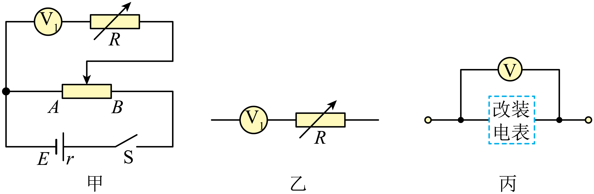
💡 显示答案与解析
【答案】(1) R₂；A；$3000.0$ (2) $1000.0$ (3) $4.2$ 【难度】0.65
(1) 分压式选小阻 R₂，闭合前使输出为零置 A 端；$\dfrac{\frac23U_g}{R_{V1}}=\dfrac{\frac13U_g}{1500}\Rightarrow R_{V1}=3000.0\ \Omega$。
(2) $\dfrac{U_g}{R_{V1}}=\dfrac{U-U_g}{R'}\Rightarrow R'=\dfrac{4-3}{3}\times3000=1000.0\ \Omega$。
(3) 改装表 $\frac56U_g$ 时标准 $3.5\ \text{V}$：$\dfrac{\frac56U_g}{R_{V1}}=\dfrac{3.5-U_g}{R_{箱}}\Rightarrow R_{箱}=1200\ \Omega$；真实量程 $U=\dfrac{U_g}{R_{V1}}(R_{V1}+R_{箱})=\dfrac{3}{3000}(4200)=4.2\ \text{V}$。
8填空难度 ⭐⭐⭐约 11 分钟
将 $I_g=500\ \mu\text{A}$、$R_g=1.2\ \text{k}\Omega$ 的电流表 G 改装成 $0\sim3\ \text{V}$ 与 $0\sim15\ \text{V}$ 电压表并校准。(1) R₁ 已调 $4.8\ \text{k}\Omega$，则 R₂ 应调 ______ $\text{k}\Omega$；(2) 校准 $0\sim15\ \text{V}$ 时 S₂ 接 ______（a/b），滑片调 M 端闭合 S₁ 调 P 时 G 示数始终为零而标准表非零，故障可能为 ______（A.R₁短路 B.G断路 C.P断开）；(3) 标准表 $12.1\ \text{V}$ 时 G 指针（图乙）示 $400\ \mu\text{A}$，因 $R_g$ 测不准，只需将 ______（R₁/R₂）调为 ______ $\text{k}\Omega$ 即可修正。
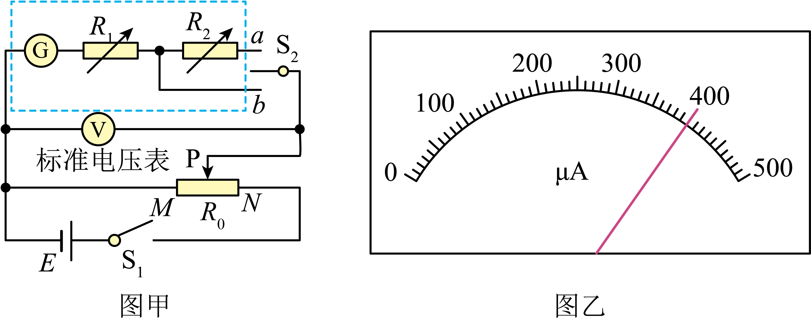
💡 显示答案与解析
【答案】(1) $24$ (2) a；B (3) R₁；$4.55$ 【难度】0.65
(1) S₂ 接 a 为 15 V：$15=I_g(R_g+R_1+R_2)\Rightarrow R_2=24\ \text{k}\Omega$。
(2) 校准 15 V 接 a；G 示数零而标准表有示数→G 断路，选 B。
(3) 图乙 $I=400\ \mu\text{A}$：$12.1=I(R_{g$实}+R_1+R_2)\Rightarrow R_{g实}=1.45\ \text{k}\Omega$$；对 3 V 量程 $3=I_g(R_{g$实}+R_1)\Rightarrow R_1=4.55\ \text{k}\Omega$$。
9填空难度 ⭐⭐⭐约 12 分钟
微安表（满偏 $100\ \mu\text{A}$）改装电压表，内阻在 $2200\sim2400\ \Omega$。(1) 小鱼法：S₂ 闭合前后 G 偏角不变，若闭合后偏角变小则将 R₂ 调 ______（大/小）；交换位置重复得 $r_1,r_2$，则 $R_g=$ ______；(2) 小唐改装 $3\ \text{V}$ 电压表，需 ______（并/串）联阻值 ______ $\Omega$ 电阻；(3) 改装表与标准表并联测未知电源，改装表半偏而标准表（图3）读 ______ V，相对误差 ______ %（两位有效数字）。
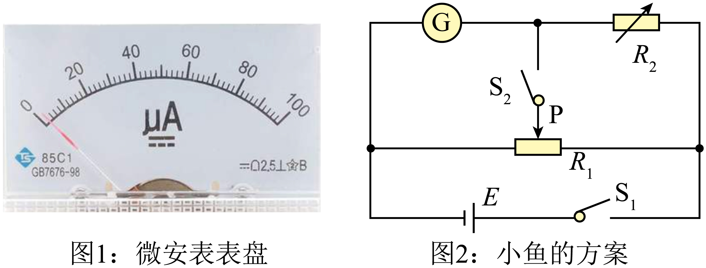
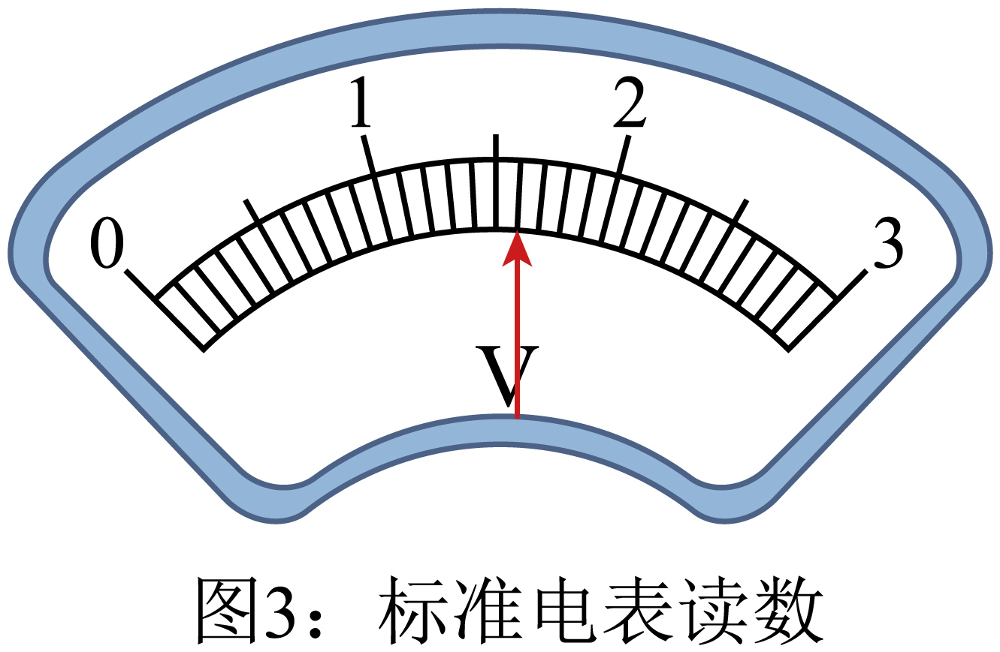
💡 显示答案与解析
【答案】(1) 大；$\sqrt{r_1r_2}$ (2) 串；$(30000-x)$ (3) $1.60$；$6.3$ 【难度】0.65
(1) 偏角变小说明 $R_2$ 偏小，应调大；交换法得 $\dfrac{r_1}{R_g}=k$、$\dfrac{R_g}{r_2}=k\Rightarrow R_g=\sqrt{r_1r_2}$。
(2) 电压表串联；$R=\left(\dfrac{3-0.0001x}{0.0001x}\right)x=(30000-x)\ \Omega$。
(3) 标准表读 $1.60\ \text{V}$；改装表半偏 $U_{测}=1.50\ \text{V}$，相对误差 $\dfrac{|1.50-1.60|}{1.60}\times100\%\approx6.3\%$。